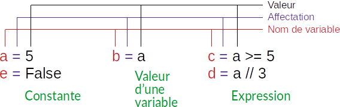
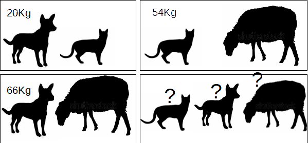

Faire de sorte que l'affichage du programme soit sur une seule ligne, comme suit :
Nombre gagnant : 47-49-69-32-40-27
Résumé
Affichage
L'affichage en Python se fait à l'aide de la fonction print(...).
Cette fonction offre plusieurs possibilités d'affichage :
Afficher un message : Le messsage doit être entre guillemets doubles"..."
ou entre guillemets simples'...'. Exemple :
print("Votre message") ou print('Votre message')
Afficher la valeur d'une variable : En l'absence de guillemetsprint(x)
Exemple
# Afficher ce qui est entre guillemets "..."
print("Bonjour")
# Sauter d'une ligne
print()
# Afficher le contenu des variables
# sur une seule ligne
# séparées par des espaces
x, y, z = 4, 7, 9
print(x, y, z)
# Affichage mixte sur une seule ligne
print("x =", x)
# Afficher le contenu des variables
# sur une seule ligne
# séparées par le symbole ":"
print(x, y, z, sep=":")
# afficher le contenu des variables
# sur plusieurs ligne
# une variable par ligne
print(x)
print(y)
print(z)
# Afficher le contenu des variables
# sur une seule ligne
# remplacer le retour à la ligne
# par le symbole " - "
print(x, end=" - ")
print(y, end=" - ")
print(z, end=" - ")
// Afficher ce qui est entre guillemets "..."
Ecrire("Bonjour")
// Sauter d'une ligne
Ecrire()
// Afficher le contenu des variables
// sur une seule ligne
// séparées par des espaces
x, y, z ← 4, 7, 9
Ecrire(x, y, z)
// Affichage mixte sur une seule ligne
Ecrire("x =", x)
// Afficher le contenu des variables
// sur une seule ligne
// séparées par le symbole ":"
Ecrire(x, ":", y , ":", z)
// afficher le contenu des variables
// sur plusieurs ligne
// une variable par ligne
Ecrire(x)
Ecrire(y)
Ecrire(z)
// Afficher le contenu des variables
// sur une seule ligne
// remplacer le retour à la ligne
// par le symbole " - "
Ecrire(x, " - ", y, " - ", z, " - ")
Bonjour
4 7 9
x = 4
4:7:9
4
7
9
4 - 7 - 9 -
Affectation
L'affectation permet de donner une valeur à une variable.
La valeur peut-être :
une constante
la valeur d'une autre variable
le résultat d'une expression

Les types d'affectations
Une variable possède :
Un nom : qui doit commencer obligatoirement par une lettre alphabétique et ne
doit pas contenir ni des espaces, ni des symboles.
Un type : qui dépend de la valeur qu'on peut stocker dans la variable.
Ecrire un programme qui déclare trois variables : chats, chiens et
vaches, puis affiche le message suivant : Nous avons soigné 7 animaux : 4 chat(s), 2 chien(s) et 1 vache(s).
Le porte monnaie
Le porte monnaie de grand-mère
Le porte monnaie de grand-mère contient les pièces de monnaie suivantes :
5 pièces de 50 millimes
2 pièces de 100 millimes
4 pièces de 200 millimes
3 pièces de 500 millimes
4 pièces de 2 DT
Ecrire un programme qui déclare cinq variables contenant le nombre de pièces de chaque type, puis calcule et
affiche le montant total.
La masse des animaux

La masse des animaux
Dans notre ferme il y a un chat, un chien et un mouton.
La masse du chat et du mouton est 54 kg.
La masse du chat et du chien est 20 kg.
La masse du chien et du mouton est 66 kg.
Ecrire un programme qui calcule la masse totale des trois animaux, puis détermine et affiche la masse de
chaque animal.
Mon âge
Mon âge
Aujourd'hui mon age est le double de celui de ma soeur. Après trois ans, mon âge sera 1.5 fois l'âge de ma
soeur.
Déterminer mon age et celui de ma soeur.
Ecrire un programme qui affiche mon âge est celui de ma soeur, aujourd'hui et après 3 ans.
Corriger l'erreur
4 = haut
7 = larg
aire = h * l
print Calcul d'aire d'un rectangle
print Largeur = l, Hauteur = h
print Aire = aire
Corriger le programme Python pour obtenir l'affichage suivant :